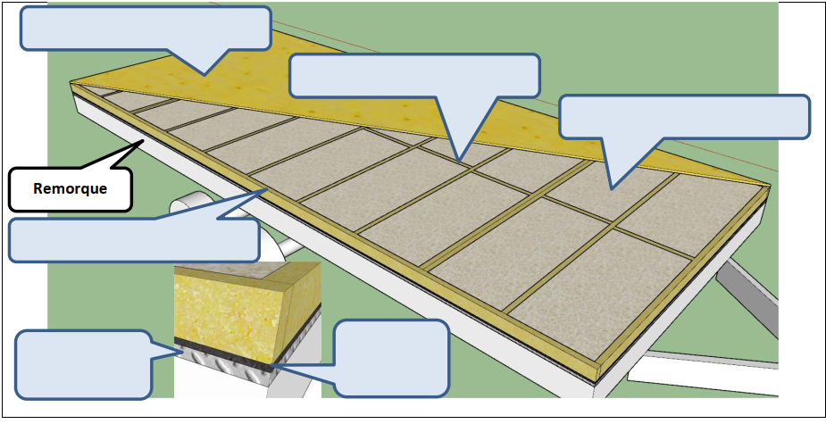
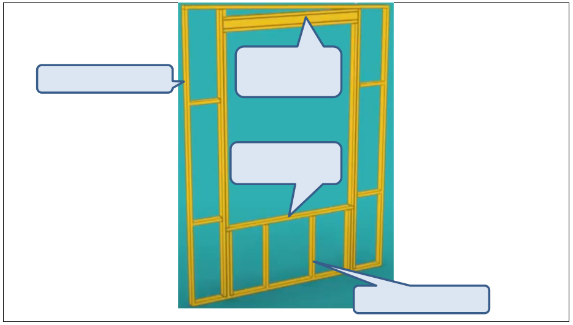
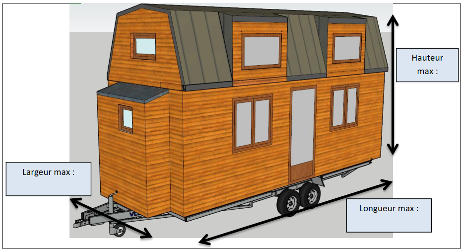
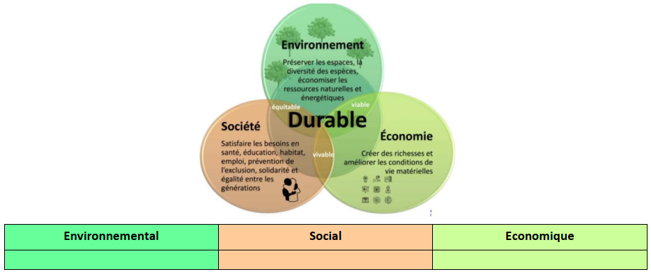

Découverte des Tiny House
Travail individuel. Vous allez regarder une série de vidéos courtes et répondre aux questions au fil du visionnage, pour construire le vocabulaire technique de la construction bois.
Pourquoi cette étape ?
Avant de dessiner votre propre Tiny House, il faut comprendre comment elle est réellement construite : plancher, ossature, isolation, bardage. Cette activité s'appuie sur les vidéos de la chaîne Miniatur, qui documente l'autoconstruction d'une Tiny House complète.
Votre dossier avec la partie « Découverte des Tiny House » complétée — les réponses aux treize questions ci-dessous.
Découvrir les Tiny House
Commencez par regarder la vidéo de présentation du projet de Miniatur, puis la vidéo sur le plancher (à partir de 1 min 18) et répondez aux questions suivantes.
Bibliothèque des vidéos
Les ressources du dossier sont regroupées dans ce tableau. Une légende précise le type de contenu de chaque vidéo.
|
|
|
|
|
|
|
|
Remplissez le schéma avec le vocabulaire suivant : solives, traverses, pare-pluie, protections en aluminium, isolation en chanvre 100 mm, contreplaqué 18 mm.

À quoi sert un pare-pluie ? Pourquoi ne faut-il pas le percer ?
À quoi servent les solives en sapin ?
La structure des murs
Regardez ensuite la vidéo sur l'ossature et répondez aux questions.
Autoconstruction — L'ossatureRemplissez le schéma avec le vocabulaire suivant : montant, traverse basse, montant d'allège, linteau.

À quoi sert un linteau ?
Au niveau du toit, à quoi sert un frein vapeur ?
L'habillage extérieur
Regardez ensuite la vidéo sur le bardage, mais juste les deux premières minutes.
Autoconstruction — Le bardageÀ quoi sert le bardage ?
Vous pourrez regarder les autres vidéos de la chaîne, mais chez vous.
La demande du client
Occupons-nous de la demande du client et des contraintes à respecter. Nous allons uniquement étudier des notions de 1STI2D, donc certains aspects de la construction sont volontairement omis. Ce que veut le client est résumé dans un diagramme des exigences (voir Projet 0 — Lancement). À l'aide de ce diagramme, répondez aux questions suivantes.
Combien de personnes pourront vivre dans la Tiny ?
Quelles sont les exigences thermiques ? Quel élément doit avoir la plus grande résistance ? Pourquoi ?
Quels éléments vont participer à la fonction « être hors d'eau et hors d'air » ?
Sur un dessin de la Tiny House vue en perspective, indiquez ses dimensions maximales : largeur, longueur et hauteur.

Pour aller plus loin
Si vous avez besoin, n'hésitez pas à faire d'autres recherches Internet pour répondre à ces dernières questions.
Dans le tableau des pôles du développement durable, indiquez des éléments qui peuvent être écologiques, économiques et sociaux. Certains peuvent se retrouver dans plusieurs colonnes.

Est-ce que la Tiny House s'inscrit dans le développement durable ? Pourquoi ?